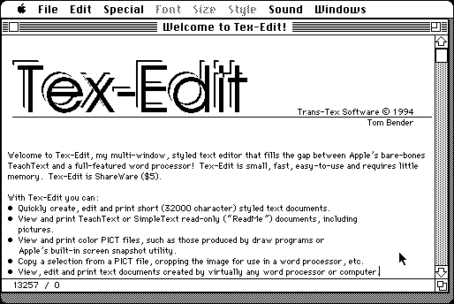

Download
tex-edit2.7.2.zip (193K) Tex-Edit 2.7.2 repackaged into a zipped hfs disk image and checksum file. The disk image can be mounted with Mini vMac.
tex-edit2.7.2.sit.hqx (266K) Tex-Edit 2.7.2 in the original format.
copyright: Trans-Tex Software
mod date: Oct 27, 1994
license: Shareware
official url :
Trans-Tex Software
Simple styled text editor, for System 6.0.7 or later. By Tom Bender.

If you find these downloads useful, please consider helping the Gryphel Project, which hosts them.
Here are the md5 checksums for the downloads, signed with Gryphel Key 5:
--------- GRY SIGNED TEXT --------- c6c3e07a3763d81b774fc972ab72fba8 tex-edit2.7.2.zip cb365596dc2d1957f79d94f5e9a4d307 tex-edit2.7.2.sit.hqx ------- BEGIN GRY SIGNATURE ------- Gry/4Xa8CFcUzxdN/APIvUy3oyJGoN/I8ccilFTjfoaDnZpSNMPB4YYSxzz+7hgD 3nxjioz17h5fo5J9Y6AV1I/EXEJtN9O02US7cflGrOmnMe75ryAneiOHCiXZz02n NyWhVfky/TNYjXsPQFGD/cd1M2WA4Q42ff7ntI/LyhlfGjoNPc0AZVsycFuiDEDq -------- END GRY SIGNATURE --------